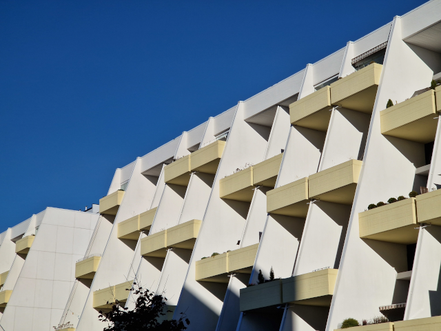

Katukuva Ulappasaarentieltä
Kuvassa näkyvät terassitalot on rakennettu Vuosaareen 70-luvun alussa. Niitä on kadun varressa kaksi ja taaempana metsäisemmässä sijainnissa vielä yksi lisää. Vuoden 2015 jälkeen alettiin rakentaa uutta terassitaloa, joka on arkkitehtonisesti samankaltainen 70-luvun terassitalojen kanssa.
Uusi terassitalo valmistui vuonna 2017. Se on hieman vaaleampi väriltään ja parvekkeet ovat lasitetut. Sama puutarhamaisuuden idea ei toteudu, mutta talo on linjassa kadunvarressa vanhempien sisariensa kanssa. Tämä sivu ei ole hirveän informatiivinen, mutta jos haluat kaivaa lisää tietoa terassitaloista, niin kokeile vasemmalla olevia linkkejä. Vuosaaren talot eivät ole ainoat